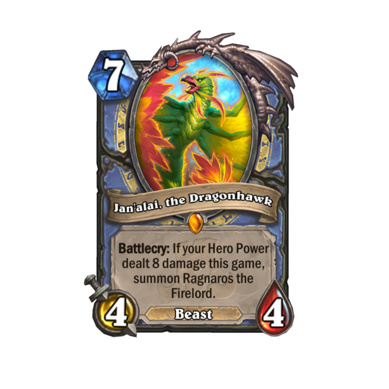
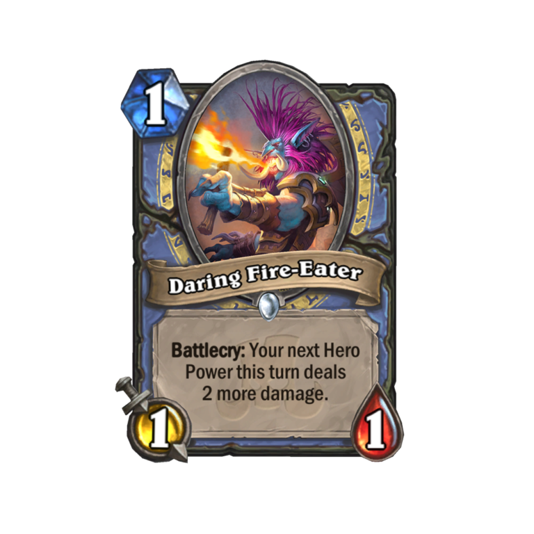
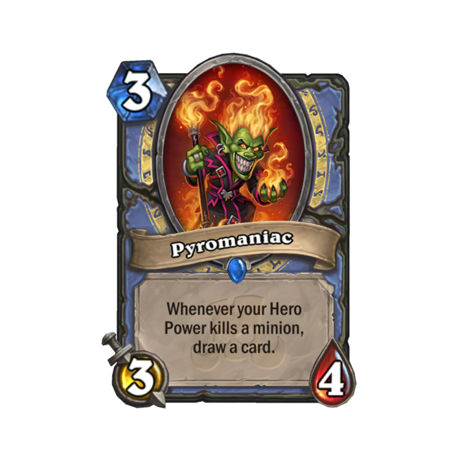
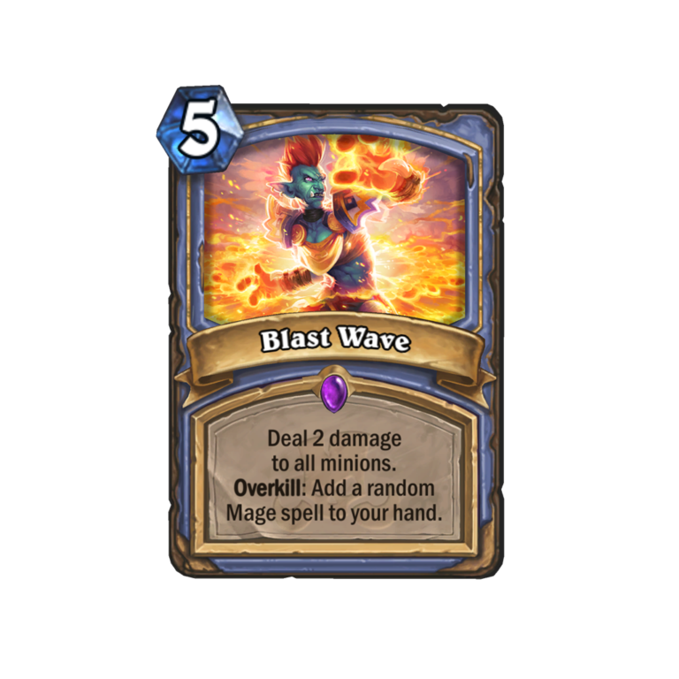

Mage is one of the most fun classes to play in Hearthstone and can be one of the most rage-inducing to play against. Prior to the release of Rastakhan’s Rumble, though, Mage players were in a bit of a rut for most of 2018.
Unless you enjoyed Big Spell Mage, there weren’t many meta options for Mage players. There were plenty of other Mage archetypes floating around, such as Elemental Mage, Tempo Mage and even Murloc Mage. But none of these seemed to be able to make their way to the top of the tier list.
With the launch of the new expansion, Mage is coming back in a big way. The first night of Rastakhan’s Rumble on Twitch saw Hearthstone legends, such as Octavian “Kripparrian” Morosan and Jeremy “Disguised Toast” Wang, play consecutive games against Odd Mage as they attempted to climb the ranked ladder. Disguised Toast may be somewhat responsible for this due to uploading a video of himself playing a version of the deck to his YouTube channel just before launch.
Let’s take a look at the playstyle and packages that make Odd Mage so powerful early on in the expansion.
 Image via Blizzard EntertainmentSince this is an Odd Deck, you’re going to be running Baku The Mooneater. This means your hero power will deal two damage all game (until you drop Frost Lich Jaina, at least). The hero power damage is important due to this deck’s bread and butter: Jan’alai, the Dragonhawk.
This card is a brand-new Mage legendary from the Rastakhan set with a Battlecry that allows you to summon Ragnaros the Firelord, provided you’ve dealt eight damage with your hero power so far in the match. Ragnaros can’t attack, but it’s an 8/8 that deals eight damage to a random enemy at the end of your turn. Depending on the matchup and the tempo of the game, Ragnaros can be used to finish off your opponent or to clear pesky high-health minions.
If you’re unable to finish your opponent off with Ragnaros and Jan’alai, odds are they’ll buy you enough time to drop Frost Lich Jaina and start the classic freeze heal cycle, leading your opponent into a drawn-out watery grave. Many Odd Mage lists run Alexstrasza as a way to expedite the process. Alexstrasza lets you set a hero’s health to 15, and you’ll usually be doing it to your opponent unless you’re near death.
 Image via Blizzard EntertainmentAn awesome package that was introduced in this expansion to further buff Odd Mage comes from Daring Fire-Eater and Pyromaniac. Daring Fire-Eater is a one-cost 1/1 with a Battlecry that causes your hero power to deal two extra damage the turn in which it’s played. Pyromaniac is a three-cost 3/4 that lets you draw a card anytime your hero power kills a minion. This comes in handy big time as a tool to speed through your deck in order to draw Jan’alai or Jaina.
 Image via Blizzard EntertainmentAnother sweet package that makes this deck so powerful is Blast Wave, Dragon’s Fury, and Arcane Tyrant. Blast Wave and Dragon’s Fury are both five-cost board clears that you can use to stall or set the board up for Ragnaros. Arcane Tyrant is a five-cost 4/4 that you can play for free if you have played a five-cost spell in the same turn.
Mulligan Guide
The Mulligan with this deck will depend on a bit of guesswork based on what class your opponent is playing. If you suspect you’re playing against a deck that isn’t incredibly fast, you’ll want to hang on to Jan’alai or Jaina (not both at once) so you can get them on the board as fast as possible. Always keep Jaina if you can afford to.
 Image via Blizzard Entertainment
Image via Blizzard Entertainment
If you suspect you’re playing against a fast deck, try hanging onto Fire Fly, Black Cat, Stonehill Defender, and Tar Creeper so that you’ll have board presence early on. The Taunts mentioned here will also keep you from getting your face smashed in during the early game.
If you can afford to based on the mana cost of the other cards in your hand, it’s a good idea to hang on to Blast Wave or Dragon’s Fury so you can counter the early rushdown from most aggro decks.
 Image via Blizzard EntertainmentArtigo produzido por: Datesports.